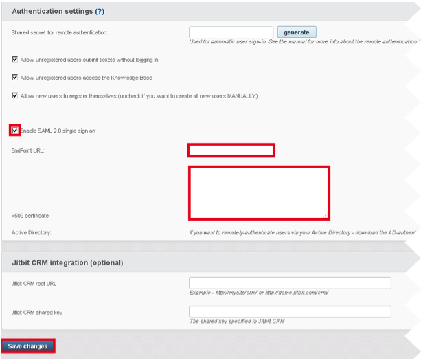

How to Configure SAML 2.0 for JitBit
This setup might fail without parameter values that are customized for your organization. Please use the Okta Administrator Dashboard to add an application and view the values that are specific for your organization.
-
Sign into Jitbit. From the main screen, navigate to Administration > General settings > Authentication settings. The following screen appears.

- Check Enable SAML 2.0 single sign on, as shown above.
-
Copy and paste the following EndPoint URL, as shown above.
Sign in to the Okta Admin app to generate this variable.
- Copy and paste the following x509 Certificate , as shown above.
Sign in to the Okta Admin app to generate this variable.
-
Select Save changes.
- Done!
Note: IdP-initiated flows, SP-initiated flows, and Just In Time (JIT) provisioning are all supported.